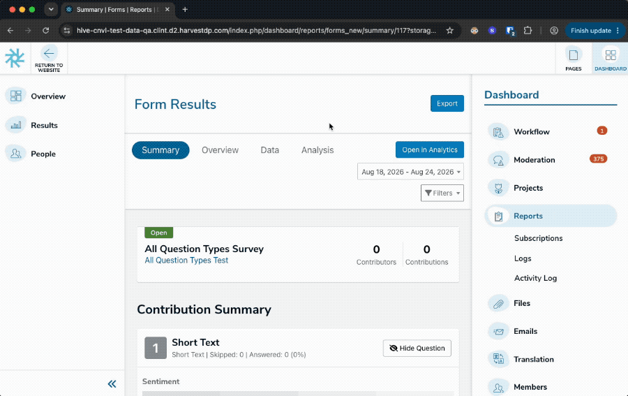

Start with the working system, then activate production with control.
Open Data-QA
A curated selection from the Engineering catalogue, connected to production Converlens.
Launch Data-QAhive-cnvl-test-data-qa.clint.d2.harvestdp.com- Connect NordLayer to Dedicated Australia.
- Use the standard shared QA details at the browser prompt.
- Sign in with the standard shared QA Hive account.

From dark capability to one enabled Site.
Agree the required values
Confirm cluster, environment, issuer, Edge and origins with the SP and Converlens deployment owners.
Pre-provision Vault
Create the empty Hive Vault record before any GitOps wiring that references it reaches the environment.
Deploy dark
Render through the environment's Argo Vault Plugin, then reconcile API before Hive with the capability disabled.
Generate the key
Create the Ed25519 key pair with the SP Core generator on an authorised host.
Hand off public trust
Send the validated public JSON to the Converlens deployment owner. The private seed never leaves SP.
Activate the cluster
Write both Vault fields in one operation, then merge API and Hive configuration together.
Enable one Site and validate
Enable the approved Site through the admin staff API, then prove launch, destination and fail-closed cases.
Onboard one SP deployment to Converlens.
This guide covers the SP-side onboarding of one SP API/Hive deployment to Converlens. It does not cover Converlens deployment or offboarding.
Required values
Confirm these values with the SP and Converlens deployment owners before activation:
| Value | Meaning |
|---|---|
cluster | SP GitOps cluster name |
environment | SP GitOps environment name |
issuer | Stable, unique identity for this SP API/Hive deployment |
edge | Converlens regional Edge |
cl_api_origin | Canonical Converlens API HTTPS origin, without a trailing slash |
cl_app_origin | Canonical Converlens application HTTPS origin, without a trailing slash |
sp_api_provider_origin | Canonical SP API HTTPS origin, without a path or trailing slash |
Issuer and origin rules
The issuer is an agreed identifier that the SP and Converlens teams choose; it is not generated or discovered. Use a unique, descriptive value such as sp-uat-1-au for one SP deployment.
The issuer:
- is not a URL or secret;
- must be identical in SP API, Hive and Converlens trust configuration;
- must not be shared by independent SP deployments; and
- must remain stable after activation, including across hostname changes and key rotations.
The issuer and Site ID together form the durable connector identity. Changing the issuer makes the deployment a different authority rather than renaming the existing one.
The provider origin is the SP API HTTPS origin, not a Hive Site URL. It contains no path or trailing slash. Converlens uses the issuer to select this provider origin and the matching public key.
Worked UAT 1 example
This example connects the Australian UAT 1 SP deployment to the Australian Converlens API and production Converlens UI. sp-uat-1-au is an illustrative proposed issuer; both teams must confirm it before activation and then keep it stable. Confirm the SP API provider origin against the target deployment before use.
cluster = kb10 environment = uat-1 issuer = sp-uat-1-au edge = au cl_api_origin = https://au.system.converlens.com cl_app_origin = https://app.converlens.com sp_api_provider_origin = https://api.testing-1-thehive.com
The derived Converlens values are:
audience = https://au.system.converlens.com initUrl = https://au.system.converlens.com/integrations/au/sp-link/init appBootstrapUrl = https://app.converlens.com/socialpoint-link.html?edge=au
Activated SP API configuration:
global:
config:
converlens:
enabled: true
issuer: "sp-uat-1-au"
edge: "au"
Activated Hive configuration:
global:
config:
converlens:
issuer: "sp-uat-1-au"
edge: "au"
keyId: "<path:kb10/data/uat-1/converlens#key_id>"
privateSeed: "<path:kb10/data/uat-1/converlens#private_seed>"
audience: "https://au.system.converlens.com"
initUrl: "https://au.system.converlens.com/integrations/au/sp-link/init"
appBootstrapUrl: "https://app.converlens.com/socialpoint-link.html?edge=au"
Vault record before activation:
Path: kb10/data/uat-1/converlens key_id="" private_seed=""
The same record after key generation contains the generated values:
Path: kb10/data/uat-1/converlens key_id=<generated-key-id> private_seed=<generated-private-seed>
Only this public information is handed to Converlens:
{
"issuer": "sp-uat-1-au",
"provider_origin": "https://api.testing-1-thehive.com",
"key_id": "<generated-key-id>",
"public_key": "<generated-public-key>"
}
The private seed is never included in the handoff.
Dark deployment
Deploy the capability disabled before creating a real signing key or enabling any Site.
In hdp-api/clusters/<cluster>/<environment>/values.yaml:
global:
config:
converlens:
enabled: false
issuer: ""
edge: ""
In hdp-hive/clusters/<cluster>/<environment>/values.yaml:
global:
config:
converlens:
issuer: ""
edge: ""
keyId: "<path:CLUSTER/data/ENVIRONMENT/converlens#key_id>"
privateSeed: "<path:CLUSTER/data/ENVIRONMENT/converlens#private_seed>"
audience: ""
initUrl: ""
appBootstrapUrl: ""
Before GitOps wiring that references this path reaches the environment, the SP Vault operator must create:
<cluster>/data/<environment>/converlens key_id="" private_seed=""
Render the API and Hive charts with the target environment values, then validate them through the environment's actual Argo Vault Plugin. Do not print or retain rendered secret values.
Reconcile API before Hive. Confirm both remain healthy and SPSync remains unavailable to every Site.
Key generation
Use the SP Core key generator from the SP Core repository on an authorised host with PHP sodium support:
php application/bin/create-converlens-link-key.php \ --private-file <new-private-path>
The command:
- refuses to replace an existing path;
- writes the key ID and private seed to a new mode-
0600file; and - prints only public JSON containing
key_idandpublic_key.
Public handoff
Create the validated public handoff using the key_id and public_key printed by the key generator:
php application/bin/create-converlens-link-config.php \ --cluster <cluster> \ --environment <environment> \ --issuer <issuer> \ --edge <edge> \ --cl-api-origin <cl-api-origin> \ --cl-app-origin <cl-app-origin> \ --sp-api-provider-origin <sp-api-provider-origin> \ --key-id <key-id> \ --public-key <public-key>
Send the resulting JSON to the Converlens deployment owner through the agreed public configuration channel. It contains no private seed. Wait for confirmation that Converlens trusts the issuer and public key before activation.
Activation
- Keep every Site's
hive.converlens.enabledentitlement false. - Write the generated
key_idandprivate_seedtogether to<cluster>/data/<environment>/converlensin one Vault operation. Never update them separately. - Update the API Git configuration:
converlens: enabled: true issuer: <issuer> edge: <edge>
- Update the Hive Git configuration, retaining the Vault placeholders:
converlens: issuer: <issuer> edge: <edge> keyId: "<path:CLUSTER/data/ENVIRONMENT/converlens#key_id>" privateSeed: "<path:CLUSTER/data/ENVIRONMENT/converlens#private_seed>" audience: <cl-api-origin> initUrl: <cl-api-origin>/integrations/<edge>/sp-link/init appBootstrapUrl: <cl-app-origin>/socialpoint-link.html?edge=<edge>
- Merge the API and Hive configuration together only after the Vault write is confirmed.
- Render and reconcile API first. Confirm disabled Sites cannot use SPSync.
- Render and reconcile Hive second. Confirm disabled Sites still cannot launch SPSync.
- Enable only the approved Site through the authenticated SP staff API:
GET /ops/sites/converlens/<site-id> PUT /ops/sites/converlens/<site-id>
{ "version": 1, "enabled": true }
The staff caller must have exact admin access. Confirm the resulting value with another GET and verify the corresponding SP audit event.
Validation
For each enabled Site, confirm:
- an eligible user can see and use Open in Analytics;
- an ineligible user cannot see or use it;
- the signed initiation uses the expected issuer, Edge and key ID;
- Converlens opens the intended workspace and target;
- SP API provider requests are restricted to the correct Site;
- an unknown key, wrong issuer or disabled Site fails closed; and
- no private seed, provider credential, exchange code or session token appears in retained logs.
Disable and rollback
- Set the affected Site entitlement to
falsefirst. Requests admitted before the change may still finish. - For cluster-wide disablement, set API
converlens.enabledtofalsethrough the normal GitOps review and reconciliation process. - If signing must also stop, replace both Vault fields with empty strings in one operation and reconcile Hive. Keep the Vault path and both fields present.
- Do not remove a public key from Converlens until every Hive replica has stopped using it.
- Disablement does not offboard an existing connector. Offboarding requires a separate approved procedure.